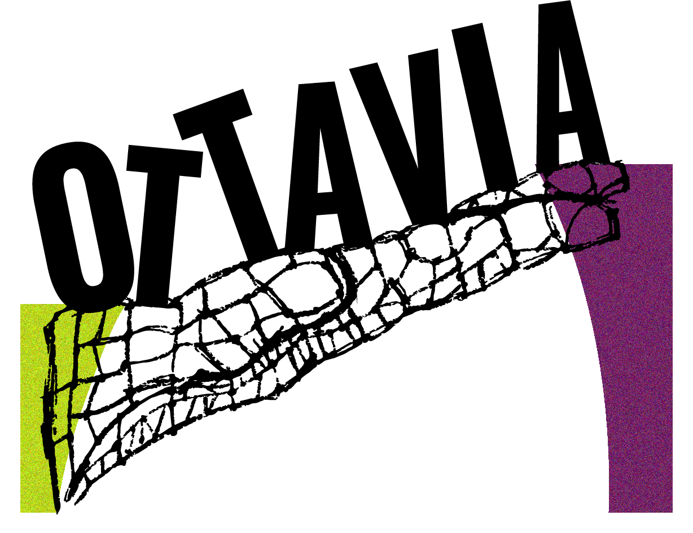

Collettivo Ottavia
Un po' collettivo, un po' laboratorio urbano.

Cosa facciamo
2025—2026
I dati intorno a noi
Un percorso di avvicinamento al dato e alla statistica per scuole superiori. Il progetto introduce nozioni di base di statistica e analisi dati, accompagnandole con riflessioni sul rapporto fra dati, modelli e società e con un marcato aspetto visivo e artistico. Nell'anno scolastico 2025-2026, il progetto è stato finanziato congiuntamente dalla SISSA e dal Comune di Trieste e ha coinvolto due classi quarte del Liceo Artistico Statale Nordio di Trieste.
Il progetto è stato presentato in un poster alla conferenza Creative Mathematical Sciences Communication 2026.

© 2026 Collettivo Ottavia